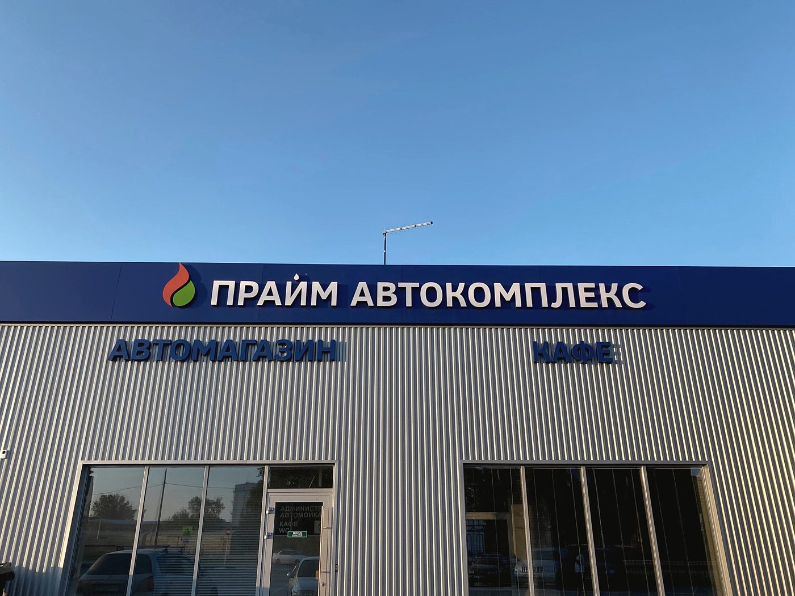
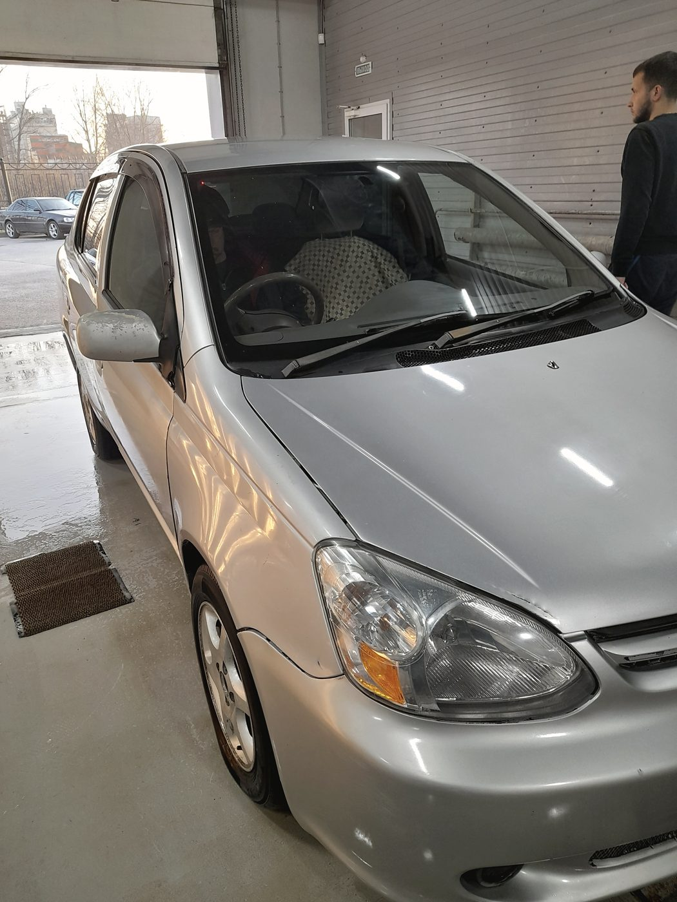
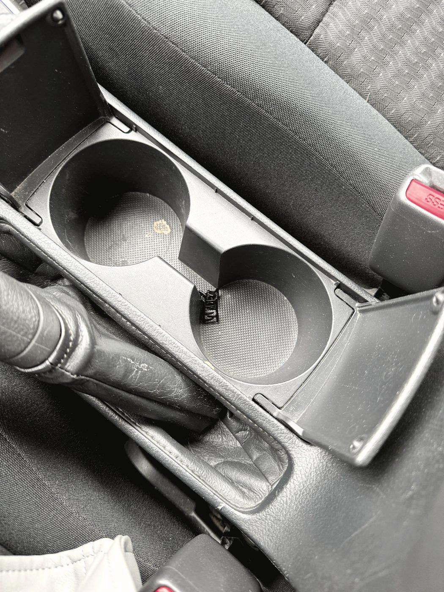
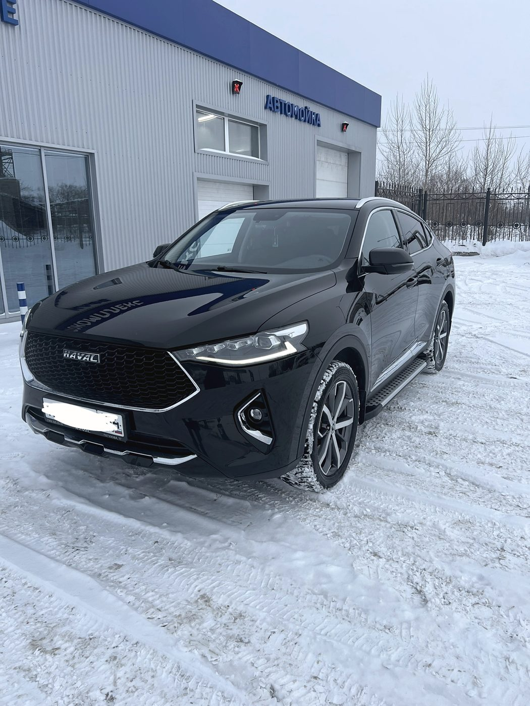
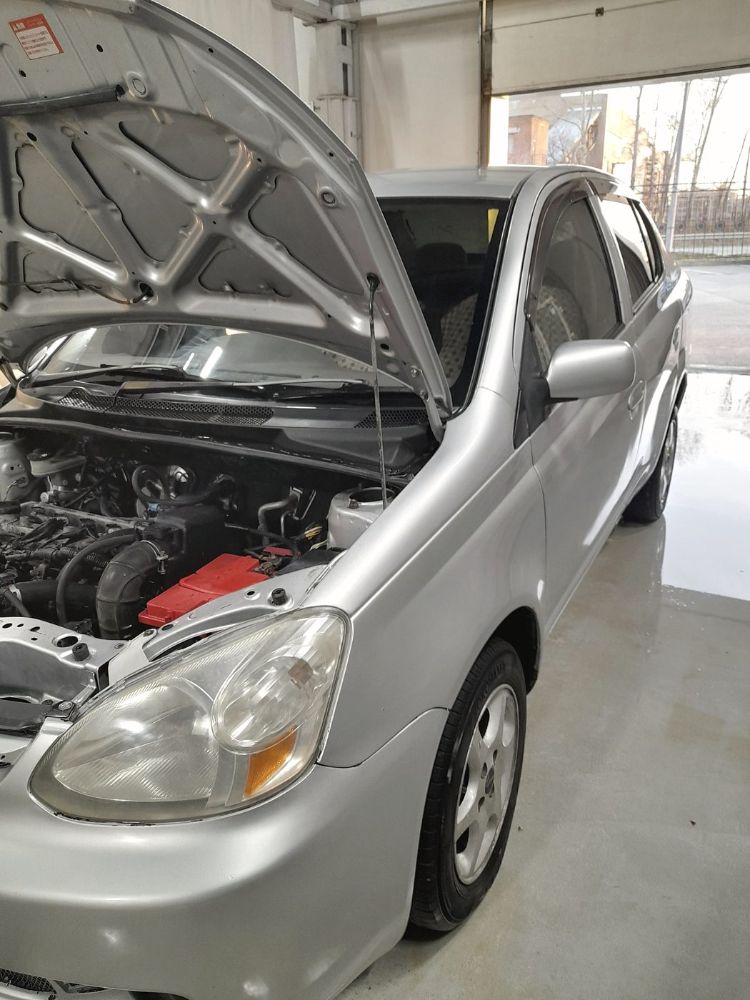
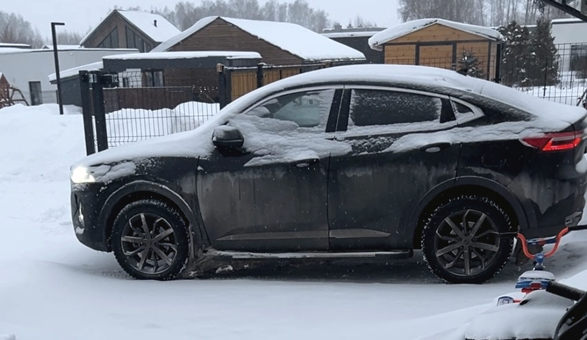
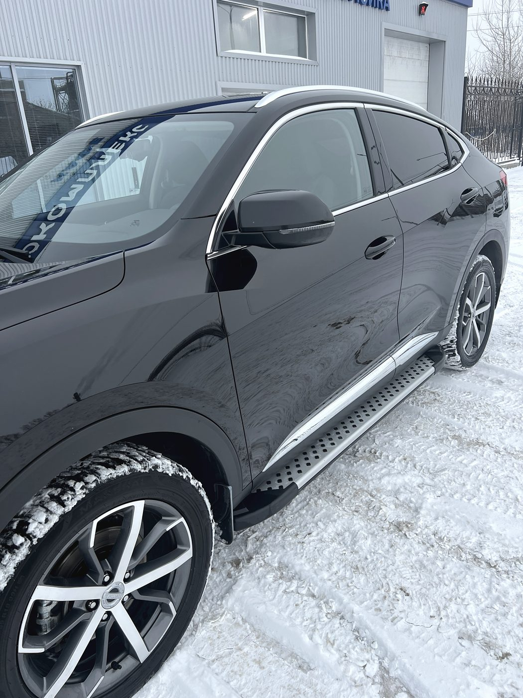

Автокомплекс · Промышленная, 20Б к2 · село Криводановка
Всё в Криводановке.
В город ехать не нужно
Сервис, мойка, кузовной цех и кафе на одной площадке. Ежедневно с девяти до восьми, включая выходные — можно приехать, оставить машину и подождать здесь же, а не искать, чем занять полдня в городе.

Что на площадке
Четыре участка
под одной крышей
В селе обычно приходится выбирать: либо сервис, либо мойка, либо ехать в Новосибирск. Здесь всё рядом — и машину можно сдать один раз, а забрать готовой и чистой.
Диагностика, ходовая, двигатель, развал-схождение, рейки, турбины, стартеры и генераторы, электроника, климат.
Запчасти под заказКомплексная от 300 ₽, бесконтактная, мойка двигателя, химчистка салона. Можно записаться заранее.
Есть зона ожиданияВосстановление геометрии, ремонт вмятин, сварка, покраска и полировка.
Смета до начала работПока идёт работа, можно нормально поесть, а не сидеть на стуле в коридоре. Кофе и чай с собой.
Прямо на территорииДо конца
Начали — доводим,
даже если работа неблагодарная
«Если начали, то делают до конца, не увиливая от неудобной и неблагодарной работы» — это из отзыва Валентины, и лучше не скажешь. Ниже — что за этим стоит на практике.
Женщина приехала на спущенном колесе, шиномонтажника на месте не было. Ребята сами нашли прокол и поставили жгут — а до этого в другом сервисе двадцать минут крутили колесо и ничего не нашли.
Клиент засомневался в мойке двигателя — мастера показали состав и рассказали порядок. Сделали аккуратно и продули. Спрашивайте: объяснят и покажут.
Работы
Что делаем
Комплексная диагностика
Компьютерная и по ходовой. Рассказываем, что нужно делать сейчас, а что подождёт.
Ходовая часть
Стойки, рычаги, шаровые, сайлентблоки. Стук ищем по факту, а не по прайсу.
Развал-схождение
Настройка углов на стенде сразу после ремонта подвески.
Двигатель и турбины
Ремонт бензиновых моторов, устранение течей, ремонт турбокомпрессоров.
Рулевые рейки
Течь, стук, тугой руль — ремонт узла вместо замены в сборе.
Стартеры и генераторы
Щётки, бендикс, обмотка, регулятор напряжения.
Кузовной ремонт и покраска
Восстановление геометрии, вмятины, сварка, подбор цвета, полировка.
Мойка и химчистка
Комплексная мойка от 300 ₽, бесконтактная, мойка двигателя, химчистка салона — вплоть до труднодоступных мест в креслах.
Климат и кондиционер
Заправка, поиск утечек, обслуживание отопителя.
Запчасти и автохимия
Заказываем от разных производителей — можно выбрать по цене и ресурсу.



Отзывы · 4,7 из 5 по 283 оценкам в 2ГИС
«Если начали, то делают до конца, не увиливая от неудобной и неблагодарной работы»
Валентина Волгина · 12 мая 2026
Приехала на спущенном колесе, мастера шиномонтажа не было на месте, но ребята помогли: быстро нашли прокол, поставили жгут. А до этого на другом СТО двадцать минут крутили колесо и ничего не нашли.
Ольга Белоскурская · 22 июня 2026
После поездки на природу с детьми салон был в ужасном состоянии. Заказала комплексную мойку с химчисткой — отмыли все труднодоступные места в креслах. Очень довольна.
Лиза Davey · 14 мая 2026



Контакты
Промышленная, 20Б к2
село Криводановка, Новосибирский район